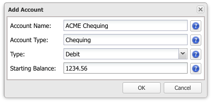
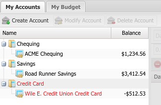

The first thing to do when you start Buddi Live for the first time is to create your accounts. In general, an account in Buddi is a location where you either store or owe money. The sum of the money in all accounts is your net worth. A few examples of accounts in Buddi may be your Savings account at the bank, your credit card, the money in your wallet, or an investment, like a GIC.
To create an account, make sure that you are in the My Accounts tab, and click on the "Create Account" button. Enter the name, the type, and the starting balance. The name can be whatever you want, but must be unique - you cannot have two accounts named "Money", for instance. The starting balance should be the amount which you currently have in this account: for instance, the total on your last bank statement, or the amount of money currently in your wallet.

For our example, we will be creating three acconts: ACME Chequing, Road Runner Savings, and a Wile E. Credit Union Credit Card. After creating them, you should see something like the screenshot. Note that you can expand the categories (e.g. Savings) to see the accounts of that type listed underneath.
